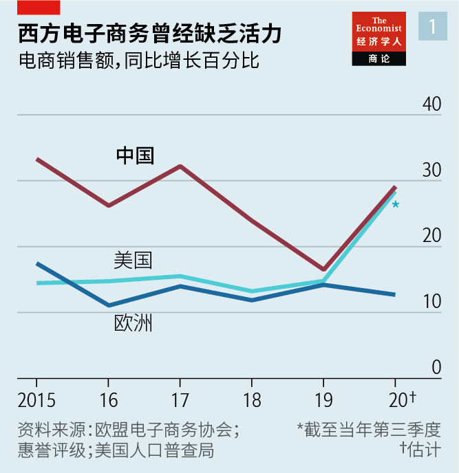
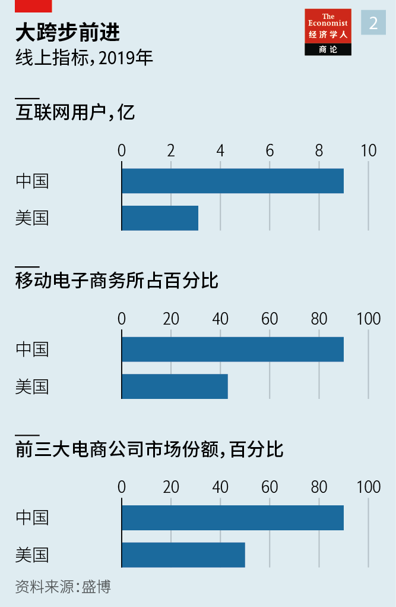
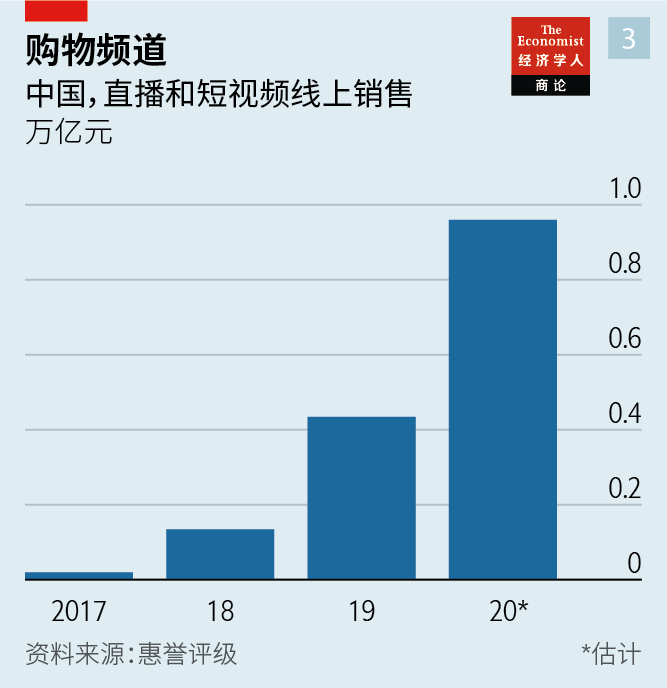
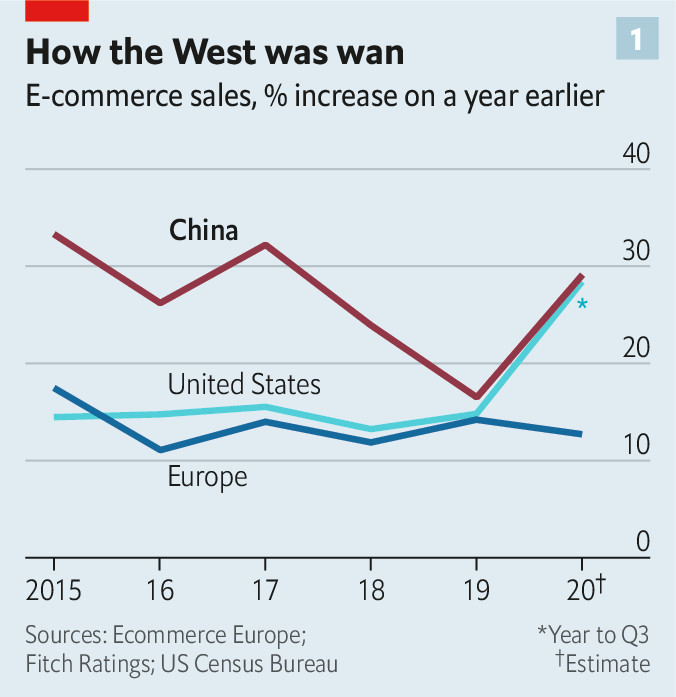
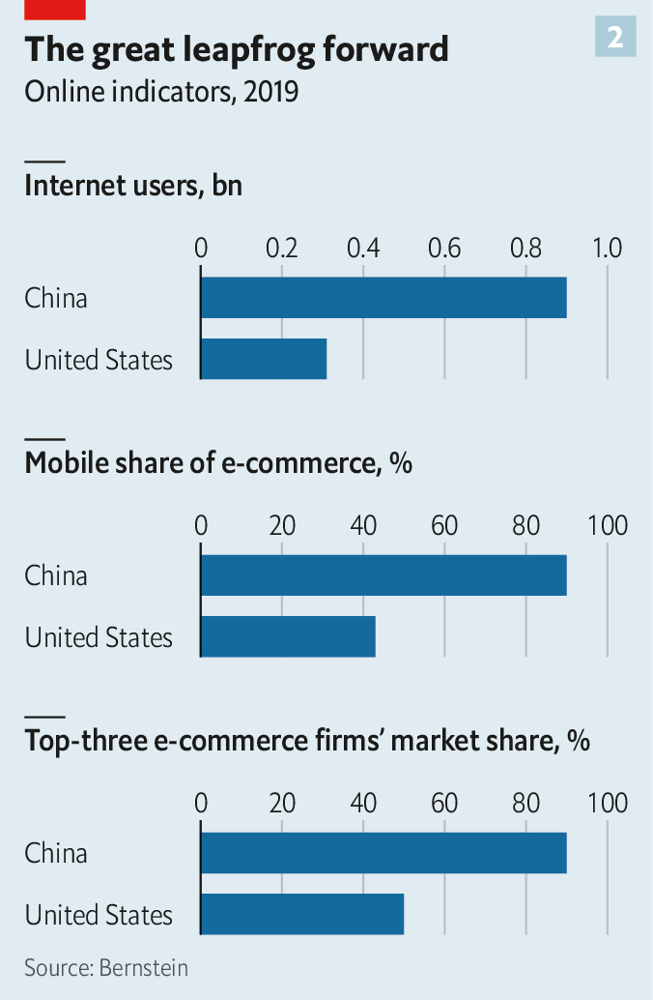
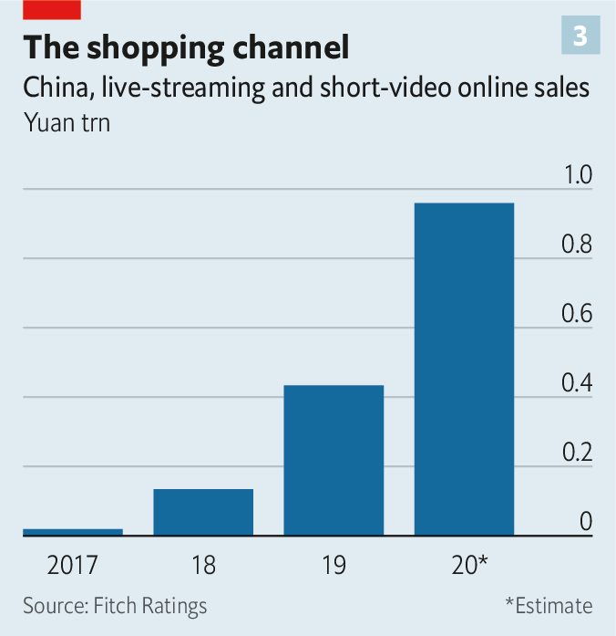

2021-01-12T17:26:19+00:00
电子商务的未来
中国大卖场
零售业的下一个大事物具有中国特色

在中国，“奥斯汀”李佳琦几乎家喻户晓。这个28岁的“口红一哥”原先在南昌卖化妆品，现在在阿里巴巴旗下中国最大的互联网零售平台淘宝上向千百万消费者直播卖货，曾在五分钟内卖出1.5万支口红。有些人可能认得昵称“小怪兽”的陈怡（音译），这个来自沿海城市青岛的24岁邻家女孩在微信这款人人都在使用的即时通讯应用上向她的两万名粉丝销售防晒霜、零食和其他很多东西，很好地贴补了她在酒吧的正职收入。还有很多知名度不高但同样劲头十足的农民和渔民在短视频中展示他们多汁的苹果或高品质的大龙虾，这种在数字平台上的表现力加上新的配送网络让城市居民能够直接购买农产品。
就是这一张张涂着口红、擦着防晒霜、顶着风吹日晒或戴着潜水呼吸管的面孔推动了中国电子商务的爆炸式增长。在语速飞快的视频直播或持续数天的购物狂欢节中，它们在几亿台智能手机的屏幕上晃动。中国的网上集市在2019年的销售额几乎是美国、英国、德国、日本和韩国总和的两倍，并且增长还在提速（见图表1）。
在没有疫情推波助澜之前，线上购物就已经迅速发展，期间中国的互联网公司构想出了吸引消费者的新方法。和淘宝不同，这些新公司尚未盈利，但发展迅猛。中国的科技公司正向它们大量注资。部分资金被用作补贴来吸引买家和卖家加入平台，相当于一投进去就直接流出，这种模式显然不可持续。但火热的局面将继续下去，而西方人才刚开始注意到这些。“想预见未来，就看看中国。”全球最大的食品公司雀巢的老板马克·施耐德（Mark Schneider）告诉他的高管们。法国美妆巨头欧莱雅的数字营销主管卢博米拉·罗谢特（Lubomira Rochet）认为，中国生机勃勃的电子商务是自下而上、“以消费者为中心”驱动的，而西方的是“技术驱动”、自上而下的。
一些西方科技主管不以为然，认为中国电子商务的发展靠的不是创造力和创业精神，而是结构性力量。他们指出中国移动电子商务占比达到90%，远高于美国的43％（见图表2）。其他一些人则将其归因于高度集中的市场：排名前三的公司（阿里巴巴、京东和拼多多）占到了电商销售总额的90％以上，这种局面开始引起中国反垄断机构的担心，已于12月24日宣布对阿里巴巴展开调查。在美国，在线巨头亚马逊以及它的两个挑战者Shopify和eBay所占比例加起来不到50％。
然而，对中国电子商务的一项调查表明它的活力“货真价实”。并非只有阿里巴巴一家在推动这个热潮。拼多多在短短几年间已经占领了14％的市场，部分导致了阿里巴巴的市场份额从67％减少到61％，并迫使这家巨头降低了对其平台上的卖家收取的“佣金率”。零售业以外的数字公司纷纷强势挤入，其中包括以食品外卖起家的美团和拥有抖音及其海外版TikTok的字节跳动。这些后来者为中国线上购物带来的活力与美国上世纪五六十年代的消费热潮很相似。
实际上，要理解中国电子商务的演进，可以回顾一下20世纪美国消费主义的诞生。后者出现的基础是多种技术同时发挥作用。当时汽车将人们带到郊区，催生了大型购物中心，人们在这些商城里不光购物，也展开社交和娱乐。尽管广播和电视通过广告和产品植入发挥了一定作用，但西方零售业的基石过去是实体店，目前仍是。根据咨询公司贝恩的说法，美国人均实体店铺面积是中国的3.3倍。经纪公司盛博估计，3.3亿美国人拥有的购物中心数量是14亿中国人的30倍。
逛西方最高档的实体店铺令人眼花缭乱，与在亚马逊上点击下单的平淡乏味对比鲜明。这些店铺也是零售商很不想要去破坏的传统投资。其结果就是零售商和顾客都不大有意愿去绕开实体店——至少在疫情之前是这样。
在中国不是这样。和世界上其他地方的人一样，中国人仍然在实体店里购买大多数产品。但许多实体店的购物环境简陋，尤其是在大城市以外的地方。有些还卖假货。因此，比起西方国家，拥有智能手机和宽带互联网的中国新兴中产阶级觉得线上购物更有成效也更自在，贝恩的马克·安德烈·卡梅尔（Marc-André Kamel）说。人口密度高也降低了消费者要承担的递送成本。
结果就形成了一个商店、娱乐场馆、美食广场、游戏厅和聚会地的综合体——以数字形式复制了20世纪的美国购物中心——以及连接虚拟与实体空间的混合链路。视频展示手工制品，网红示范其使用方式，朋友在社交媒体上推荐（或不推荐）购买。消费者与其他网民一起以折扣价“团购”。直播将整个过程变成了一种娱乐。最后由实体企业网络送货上门。
这个网上购物中心的主要驻场租户通常是一个超级应用，比如拥有12亿用户的微信。微信为中国最大的互联网公司腾讯所有，并将流量引向腾讯持股的京东和拼多多。在中国，人们脑中并不存在社交网络和购物网站之间的界限，咨询公司乐售（Lengow）的弗雷德里克·克莱门特（Frédéric Clément）说。消费者很喜欢这种形式。盛博预计，即使在疫情引发的线上购物潮过去之后，到2021年电子商务仍将占中国零售总额的四分之一以上，约为美国该比例的两倍。
这种新零售架构的第一个支柱是“社交商务”。它依赖三种相关联的技术：直播、短视频和社交网络。最大的直播平台是阿里巴巴的淘宝直播。双十一（中国版黑色星期五）预售刚开启30分钟，销售额就达到75亿美元，差不多等同于亚马逊在10月的“Prime Day”（实际上持续了48小时）估计达到的销售额。淘宝之类的商家也与名人网红合作，在抖音上直播带货，这推动抖音于去年6月开设了自己的购物平台。抖音的六亿日活用户贡献了一个宝贵的资源——他们的注意力。到了秋天，抖音也推出了自家的第一个“双十一”购物节。
评级机构惠誉（Fitch）认为，2020年直播零售的市场规模接近一万亿元，是2019年的两倍（见图表3）。抖音的短视频竞争对手快手预计，到2025年，直播销售的商品总价值在线上销售中的占比将从2019年的4.2％增长到近四分之一。
中国人因疫情困在家中，而奈飞（Netflix）等许多“吸睛”的替代选择在中国仍然被禁，直播得以蓬勃发展。对于薪水相对较低的人来说，为了获得某些商品的折扣，花时间追直播是值得的。居家式网红中介行业蓬勃发展。其中一家网红中介公司PARKLU的营销主管伊利亚·惠利（Elijah Whaley）说，西方品牌把卖不出去的产品运到中国，通过直播渠道清货。罗谢特说，欧莱雅中国区的老板在最近一次直播销售活动中受到扑面而来的各种表情、点赞和提问冲击，疲于应对。这场直播还送上了“幸运大礼包”，为几名幸运顾客提供了超值折扣。
批量购买有各种砍价的空间。这就轮到社交网络出场了。成立于2015年的拼多多现在市值1750亿美元，让消费者可以组团——通常是通过微信来拼团——与商户讨价还价，尤其是对日用品。拼多多仍在亏损，继续烧钱。但其营收正在迅速增长，去年第三季度同比增长了近90％。咨询公司天马的数据显示，推出七年的小红书已经是中国最受欢迎的跨境电商应用之一，估计有8500万用户。其顾客以年轻女性为主，她们通过文字、图片和视频交流购物经验。天马称小红书是Instagram和Pinterest这两个美国照片共享应用的中国结合版。
中国宏伟的数字商城的第二大支柱是西方零售商熟知的“全渠道”或称“全通路”。和“社交商务”一样，全渠道模式也在疫情封锁和商店关闭期间蓬勃发展。在中国，最大的几家电子商场拥有自己的实体超市业务，例如阿里巴巴有盒马鲜生，京东有7Fresh生鲜连锁。京东还有它所谓的“新通路”业务，与全中国680万家日杂店中的一部分展开合作。京东向它们运送品牌商品，把店里货架上已有的商品配送给本地买家，并向它们提供数据以优化它们的运营。
某些实体零售商则会提供数字优惠券以鼓励顾客到店消费，也通过网上直播来吸引关注，希望能增加到店客流。还有些实体店提供“无结账”购物，包括扫码支付的无人商店和智能自动售货机。
阿里巴巴表示，在截至2020年3月的12个月里，其混合渠道销售额同比增长一倍以上，达到860亿元，在它的主要零售收入中的占比从11％上升到17％。京东超市业务的销售额在第三季度同比增长48％。美团已将其配送业务范围从外卖扩展到了生鲜杂货。由承诺30分钟送日杂到家的每日优鲜等创业公司建立的迷你仓库正在中国的城市里遍地开花。
在2020年之前，社交商务和线上线下混合购物在西方触发的反应大多是茫然。疫情让人们迅速重新审视这两种模式。正如Facebook的产品负责人乔治·李（George Lee）所说，疫情就像是“行动号令”。Facebook旗下各类应用有1.6亿个企业用户，其中大多数是中小型企业，在政府下令许多实体店歇业后，不得不迅速转战线上。
去年5月，Facebook推出了Facebook Shops，让企业可以在其核心社交网络及姊妹应用Instagram上创建一个统一的在线商店。11月，Instagram的主界面多年来首次改版，新增了名为Reels和Shop的标签，推广短视频和在线零售。Facebook旗下包括WhatsApp在内的即时通讯应用可用来联系其平台上的企业，最终可能用于销售。Facebook Live也可以做直播。12月，美国最大的连锁超市沃尔玛在TikTok上举行了名为“节日一起购”的直播活动（两者已建立了合作伙伴关系）。这次活动模仿抖音在中国的做法，让观众可以直接通过TikTok购买网红们展示的时尚商品。
Instagram的维沙尔·沙阿（Vishal Shah）在描述Facebook的目标时区分了“买”（buying）和“逛”（shopping）这两个词——也就是把一个实用性的过程转变成更个人化的体验。其他社交媒体公司也在朝着这个方向走。从2020年起，Snapchat用户可以虚拟试妆试鞋，增强了这款应用所说的“可逛性”。Shopify已与TikTok合作，帮助其100多万商家通过视频营销商品。
和大多数与电子商务有关的事情一样，亚马逊在全渠道销售上也领先一步。它拥有近500家全食超市（Whole Foods Market）门店，并在美国启动了部分Amazon Fresh生鲜服务，向它的一部分Prime订户免费当日送货。但沃尔玛和塔吉特（Target）等大型零售商也在全渠道这一块大踏步向前：警惕新冠病毒的购物者对拥挤的超市过道心存畏惧，使得“网上下单、到店提货”的方式大受欢迎。
并非所有人都认为美国会走上中国开辟的道路。贝恩认为，尽管最近取得了一些进展，但社交商务在美国零售总额中的占比要比在中国小得多。亚马逊国际零售业务负责人罗素·格兰迪内蒂（Russell Grandinetti）表示，消费者在不同的时间有不同的需求。有时候他们只是想快速买好价格不错的东西，没空去捧网红们的场。他说，亚马逊率先推出了某些浏览方式，例如在线书评和“购买该商品的人也购买了以下商品”的提示。他指出，Prime Video和亚马逊的游戏平台Twitch已经为亚马逊的免费送货服务吸引来“数以百万计的客户”，他们原本主要只是对娱乐内容感兴趣。至于直播，“在西方就是还没有像在中国那样流行起来”。
格兰迪内蒂认为直播最终也会在西方盛行。其他观察人士指出，美国实体零售店的庞大规模降低了线上线下融合的物流成本，这可能会鼓励更多的混合渠道购物模式。在其他方面，美国将走出自己的道路。美国的劳动力价格比中国更高，可能会更快实现线上履单自动化。那里的人们重视隐私更甚于便利性，这可能会削弱购物者在社交媒体上与朋友分享消费习惯的意愿。
而且如火如荼的中国零售业仍有可能失去活力。人口老龄化终将令工资低廉的仓库工人和送货司机供应不足。这可能意味着运费增加，等待时间变长，甚至可能会有工会要求改善工作条件，导致成本进一步增加。对网红的信任度在下降，尤其是那些拿了巨额报酬来推广品牌的人。那些赚得少的主播可能会失去耐心，回归日常工作。“收入前1％的大赚特赚。剩下的都是挨饿的艺人。”PARKLU的惠利说。
西方企业之所以没有马上效仿中国的电子商务，主要可能不是因为它固有的缺陷，而是它们自己过度专业化。从西雅图的亚马逊总部、硅谷的Facebook，到本顿维尔（Bentonville）的沃尔玛，美国公司过去往往都专注于各自的核心业务——无论是电子商务、社交媒体，还是超市。直到最近它们才开始入侵彼此的地盘。假以时日，这可能会让业务的界限变得更加模糊。在最近一次在线小组会议上，Facebook负责电子商务孵化的埃里克·冯（Eric Feng）略带开玩笑地总结道：“中国，你就是指引我们前进的明灯。”
2021-01-12T17:26:19+00:00
The future of e-commerce
The great mall of China
The next big thing in retail comes with Chinese characteristics
ALMOST EVERYONE in China knows “Austin” Li Jiaqi. The 28-year-old “Lipstick Brother”, started out flogging make-up products in Nanchang, a provincial city, and now sells them to millions by live-streaming on Taobao, part of Alibaba, China’s biggest internet retailer—once shifting 15,000 sticks of lipstick in five minutes. Some will recognise Chen Yi, nicknamed “Little Monster”, a 24-year-old girl-next-door from the coastal city of Qingdao who sells sunscreen, snacks and lots more besides to her 20,000 followers on WeChat, a ubiquitous messaging app: a nice supplement to her day job as a bartender. More obscure but no less enterprising, farmers and fishermen show off juicy apples or prize lobsters in short videos, digital showmanship accompanied by new delivery networks that allow city dwellers to procure the produce.
Such are the faces—lipsticked, sunscreened, weather-worn or besnorkeled—that have helped propel an explosion of e-commerce in China. In rapid-fire videos or days-long jamborees, they flicker across hundreds of millions of smartphone screens in a cyber-bazaar that in 2019 was almost twice the size of those of America, Britain, Germany, Japan and South Korea combined—and growing faster (see chart 1).
As online shopping has soared, even before covid-19 added extra fuel, Chinese internet firms have dreamed up new ways to engage consumers. In contrast to Taobao, the new ventures do not yet make money. But they are growing apace. Chinese tech firms are pouring fortunes into them. Some of this capital flows straight back out as subsidies to entice buyers and sellers to the platforms, which clearly cannot go on for ever. But the effervescence is here to stay—and Westerners are only starting to notice. “If you want to see the future, look at China,” Mark Schneider, boss of Nestlé, the world’s biggest food company, instructs his executives. Lubomira Rochet, head of digital marketing at L’Oréal, a French beauty behemoth, contrasts the bottom-up, “consumer-centric” vibrancy of Chinese e-commerce with the West’s “tech-driven”, top-down approach.
Some Western tech executives dismiss the Chinese experience as a function not of creativity and enterprise but of structural forces. They cite China’s higher mobile share of e-commerce—90% versus 43% in America (see chart 2). Others put it down to a concentrated market, where the top three firms, Alibaba, JD.com and Pinduoduo, account for more than 90% of all digital merchandise sales, a state of affairs that is beginning to trouble Chinese trustbusters, who on December 24th announced an investigation into Alibaba. In America the online titan, Amazon, and its two challengers, Shopify and eBay, accounted for less than 50%.
Yet a survey of Chinese e-commerce reveals genuine dynamism. It is not just Alibaba making the running. In a few years Pinduoduo has captured 14% of the market, helping to trim Alibaba’s share from 67% to 61%—and forcing the giant to moderate the “take rate” it charges those selling via its platforms. Digital firms from outside retail are muscling in, including Meituan, which started out in food delivery, and ByteDance, which owns TikTok and its Chinese short-video cousin, Douyin. The newcomers bring the sort of verve to online shopping in China that characterised America’s consumer boom of the 1950s and 1960s.
Indeed, to understand the evolution of Chinese e-commerce, look back to the birth of 20th-century consumerism in America. It was built around overlapping technologies. The car carried people to the suburbs, giving rise to the shopping mall, a place not just to shop but to mingle and have fun. Although radio and television played a role, through advertising and product placement, Western retail’s bedrock was—and continues to be—bricks and mortar. According to Bain, a consultancy, America has 3.3 times as much physical shop floor per person as China does. Bernstein, a broker, reckons that America’s 330m people have 30 times as many malls as 1.4bn Chinese do.
The West’s finest shops are as dazzling as ordering on Amazon is drab. They also represent legacy investments that retailers are loth to undermine. As a result, neither retailers nor their customers have had much of an incentive to shun them—at least before covid-19.
Not so in China. Like everyone else in the world, Chinese still buy most things in physical shops. Especially outside big cities, though, many of these are shabby. Some sell fake goods. So China’s nascent middle class, armed with smartphones and broadband internet, finds online shopping both more rewarding and comfier than in the West, says Marc-André Kamel of Bain. A high population density makes delivery cheaper for consumers.
The result is a mix of shops, entertainment venues, food courts, games arcades and gathering places that replicates the 20th-century American mall in digital form, and hybrid links of the virtual with the physical. Videos show something being crafted by hand. Influencers draw attention to how the item is used. Friends recommend it (or not) on social media. Shoppers band together with other netizens to buy it in bulk at a discount. Live broadcasts turn the whole process into entertainment. And a network of real-world businesses delivers the purchases.
The anchor cyber-tenant is commonly a super-app like WeChat, which has 1.2bn users. It is owned by Tencent, China’s biggest internet company—and directs traffic to JD.com and Pinduoduo, in which Tencent holds stakes. The line in people’s minds between social networks and shopping websites does not exist in China, notes Frédéric Clément of Lengow, a consultancy. Shoppers love it. Bernstein expects e-commerce to account for more than a quarter of all retail sales in China by 2021, roughly twice the share in America, even after the pandemic-induced stampede online.
The first pillar of this new retail architecture is “social commerce”. This relies on three related technologies: live-streaming, short-form video and social-networking. The biggest live-streamer is Alibaba’s Taobao Live. In just 30 minutes of presales for Singles Day, China’s answer to Black Friday, it notched up $7.5bn-worth of sales, about as much as Amazon is thought to have sold in its “Prime Day” in October (which actually lasted 48 hours). In June Douyin set up its own shopping platform, having earlier hosted live-streams where the likes of Taobao teamed up with celebrity influencers to sell products. The video-app’s 600m daily users confer a valuable resource—their attention. In the autumn it made its proprietary debut on Singles Day.
Fitch, a ratings agency, thinks the market for live-stream retail neared 1trn yuan ($153bn) in 2020, double the prior year’s amount (see chart 3). Kuaishou, Douyin’s short-video rival, expects the gross value of goods sold on live-streams to rise from 4.2% of online sales in 2019 to almost a quarter by 2025.
Live-streaming has boomed as covid-19 confined Chinese to their living rooms while many captivating alternatives, like Netflix, remained banned in the country. For people on relatively low salaries, the discounts on some of the merchandise are worth time spent glued to a live-stream. According to Elijah Whaley, marketing chief of PARKLU, one of a booming cottage industry of influencer agencies, Western brands shipped unsold products to China, where live-streams offered a way to flog them. Ms Rochet says L’Oréal’s boss in China was flooded with emojis, likes and questions when he live-streamed a recent sales event. It included “lucky charms” that gave a few fortunate shoppers big discounts.
Many bargains are available for bulk purchases. This is where the social networks come in. Pinduoduo, founded in 2015 and now worth $175bn, enables groups, often formed via WeChat, to haggle with merchants, especially on groceries. It still makes a loss and burns cash. But its revenues are soaring, by almost 90% year on year in the third quarter. Seven-year-old Xiaohongshu, or Little Red Book, is already one of China’s most popular apps for cross-border commerce, with an estimated 85m users, according to Tenba Group, a consultancy. Its customers, most of whom are young women, exchange shopping experiences via text, images and video. Tenba calls it a Chinese mix of Instagram and Pinterest, two American photo-sharing apps.
The second pillar of China’s great digital mall is familiar to Western retailers as “omnichannel”. Like social commerce, it too has boomed amid pandemic lockdowns and shop closures. In China the biggest e-emporia have their own supermarket businesses, such as Alibaba’s Freshippo and JD.com’s 7Fresh grocery chain. JD.com also has what it calls a “new-markets” business, which works with some of China’s 6.8m local grocery stores. It ships them branded goods, delivers what is already on their shelves to local buyers, and feeds them data to optimise their operations.
Some physical retailers, for their part, offer digital coupons to encourage customers to pay a visit, as well as using live-streaming to generate buzz and, hopefully, foot traffic. Others offer “grab-and-go” shopping, including staffless stores and smart vending machines where payments are made by scanning QR codes.
Alibaba says that its hybrid sales more than doubled in the 12 months to March 2020, year on year, to 86bn yuan. They rose from 11% of its main retail revenues to 17%. Sales from JD.com’s supermarket business grew by 48% year on year in the third quarter. Meituan has broadened its speedy deliveries from takeaway meals to groceries. Mini-warehouses built by startups such as Missfresh, which promises 30-minutes grocery deliveries, are mushrooming in Chinese cities.
Before 2020 both social commerce and hybrid shopping provoked mostly bemusement in the West. Covid-19 has led to a swift reappraisal. As George Lee, Facebook’s head of product, puts it, the pandemic was a “call to action”. The social network caters to the 160m businesses, mostly small and medium-sized, that use its apps and had to shift online as authorities ordered many physical shops to shut.
In May it introduced Facebook Shops, enabling businesses to set up a single online store on its core social network and its sister app, Instagram. In November Instagram redesigned its home screen for the first time in years, introducing tabs called Reels and Shop, which promote short videos, as well as online retail. Facebook’s messenger apps, including WhatsApp, can be used to communicate with businesses on its platforms and may eventually be used for sales. Facebook Live also does streaming. In December Walmart, America’s largest supermarket chain, held what it called a “Holiday Shop-Along Spectacular” on TikTok, with which it has formed a partnership. It allowed viewers to buy some of its fashion items exhibited by celebrities directly via the video app, apeing what Douyin has been doing in China.
Vishal Shah of Instagram makes a distinction between “buying” and “shopping” to describe Facebook’s aim—in other words, turning a utilitarian process into a more personal experience. Other social-media firms are moving in the same direction. Since 2020 Snapchat users can try on make-up and shoes virtually, bolstering what the app calls “shopability”. Shopify has enlisted TikTok to enable its 1m-plus merchants to market their wares by video.
In omnichannel sales, as in most things e-commercial, Amazon is ahead of the pack. It owns almost 500 Whole Foods Market stores and has opened some Amazon Fresh grocers in America that offer free same-day delivery to some members of its Prime subscription service. But big-box retailers like Walmart and Target, whose in-store pickups on online purchases have been a hit with covid-wary shoppers fearful of crowded aisles, have made huge strides.
Not everyone thinks that America will follow the trail blazed by China. Bain says that recent inroads notwithstanding, social commerce accounts for a much smaller share of total retail sales in America than in China. Russell Grandinetti, Amazon’s head of international retail, says consumers want different things at different times. Sometimes they just want to buy stuff quickly and cheaply, not be wowed by celebrities. He says Amazon pioneered certain browsing techniques, such as online book reviews and tips that “people who bought this also bought that”. He notes that Prime Video and Twitch, Amazon’s gaming platform, have attracted “millions of customers” primarily interested in entertainment to its free shipment of goods. As for live-streaming, “It just hasn’t taken off in the West the same way it has in China.”
It will do eventually, Mr Grandinetti thinks. Other observers point out that the sheer size of America’s physical retail presence makes the logistics of weaving offline and online cheaper—which may encourage more hybrid shopping models. In other ways America will chart its own path. Pricier labour than in China may lead to faster automation of online fulfilment. Greater concern over privacy relative to convenience may dampen shoppers’ appetite for sharing their spending habits with friends on social media.
And China’s retail razzmatazz could yet lose its vim. An ageing population will eventually reduce supply of cheap warehouse workers and delivery drivers. That may mean higher delivery fees, longer waiting times, perhaps even unions demanding better working conditions, further raising costs. Trust in influencers, particularly those paid big money to promote brands, is waning. Those making less may lose patience and stick to their day jobs. “The top 1% make a killing. The rest are starving artists,” says PARKLU’s Mr Whaley.
Perhaps the main reason Western firms have been slow to emulate Chinese e-commerce is not its inherent flaws but their overspecialisation. From Amazon’s home in Seattle and Facebook’s in Silicon Valley to Walmart’s in Bentonville, American companies have tended to focus on their core business—be it e-commerce, social media or supermarkets. Only recently have they begun to invade each other’s turf. In time that may lead to more blurring of business boundaries. As Eric Feng, Facebook’s head of commerce incubations, summed it up at a recent virtual panel, tongue only slightly in cheek: “China, you are the light that will show us the way.”■
2021-01-12T17:26:19+00:00
電子商務的未來
中國大賣場
零售業的下一個大事物具有中國特色
在中國，“奧斯汀”李佳琦幾乎家喻戶曉。這個28歲的“口紅一哥”原先在南昌賣化妝品，現在在阿里巴巴旗下中國最大的互聯網零售平台淘寶上向千百萬消費者直播賣貨，曾在五分鐘內賣出1.5萬支口紅。有些人可能認得昵稱“小怪獸”的陳怡（音譯），這個來自沿海城市青島的24歲鄰家女孩在微信這款人人都在使用的即時通訊應用上向她的兩萬名粉絲銷售防晒霜、零食和其他很多東西，很好地貼補了她在酒吧的正職收入。還有很多知名度不高但同樣勁頭十足的農民和漁民在短視頻中展示他們多汁的蘋果或高品質的大龍蝦，這種在數字平台上的表現力加上新的配送網絡讓城市居民能夠直接購買農產品。
就是這一張張塗著口紅、擦着防晒霜、頂着風吹日晒或戴着潛水呼吸管的面孔推動了中國電子商務的爆炸式增長。在語速飛快的視頻直播或持續數天的購物狂歡節中，它們在幾億台智能手機的屏幕上晃動。中國的網上集市在2019年的銷售額幾乎是美國、英國、德國、日本和韓國總和的兩倍，並且增長還在提速（見圖表1）。
在沒有疫情推波助瀾之前，線上購物就已經迅速發展，期間中國的互聯網公司構想出了吸引消費者的新方法。和淘寶不同，這些新公司尚未盈利，但發展迅猛。中國的科技公司正向它們大量注資。部分資金被用作補貼來吸引買家和賣家加入平台，相當於一投進去就直接流出，這種模式顯然不可持續。但火熱的局面將繼續下去，而西方人才剛開始注意到這些。“想預見未來，就看看中國。”全球最大的食品公司雀巢的老闆馬克·施耐德（Mark Schneider）告訴他的高管們。法國美妝巨頭歐萊雅的數字營銷主管盧博米拉·羅謝特（Lubomira Rochet）認為，中國生機勃勃的電子商務是自下而上、“以消費者為中心”驅動的，而西方的是“技術驅動”、自上而下的。
一些西方科技主管不以為然，認為中國電子商務的發展靠的不是創造力和創業精神，而是結構性力量。他們指出中國移動電子商務佔比達到90%，遠高於美國的43％（見圖表2）。其他一些人則將其歸因於高度集中的市場：排名前三的公司（阿里巴巴、京東和拼多多）佔到了電商銷售總額的90％以上，這種局面開始引起中國反壟斷機構的擔心，已於12月24日宣布對阿里巴巴展開調查。在美國，在線巨頭亞馬遜以及它的兩個挑戰者Shopify和eBay所佔比例加起來不到50％。
然而，對中國電子商務的一項調查表明它的活力“貨真價實”。並非只有阿里巴巴一家在推動這個熱潮。拼多多在短短几年間已經佔領了14％的市場，部分導致了阿里巴巴的市場份額從67％減少到61％，並迫使這家巨頭降低了對其平台上的賣家收取的“傭金率”。零售業以外的數字公司紛紛強勢擠入，其中包括以食品外賣起家的美團和擁有抖音及其海外版TikTok的字節跳動。這些後來者為中國線上購物帶來的活力與美國上世紀五六十年代的消費熱潮很相似。
實際上，要理解中國電子商務的演進，可以回顧一下20世紀美國消費主義的誕生。後者出現的基礎是多種技術同時發揮作用。當時汽車將人們帶到郊區，催生了大型購物中心，人們在這些商城裡不光購物，也展開社交和娛樂。儘管廣播和電視通過廣告和產品植入發揮了一定作用，但西方零售業的基石過去是實體店，目前仍是。根據諮詢公司貝恩的說法，美國人均實體店鋪面積是中國的3.3倍。經紀公司盛博估計，3.3億美國人擁有的購物中心數量是14億中國人的30倍。
逛西方最高檔的實體店鋪令人眼花繚亂，與在亞馬遜上點擊下單的平淡乏味對比鮮明。這些店鋪也是零售商很不想要去破壞的傳統投資。其結果就是零售商和顧客都不大有意願去繞開實體店——至少在疫情之前是這樣。
在中國不是這樣。和世界上其他地方的人一樣，中國人仍然在實體店裡購買大多數產品。但許多實體店的購物環境簡陋，尤其是在大城市以外的地方。有些還賣假貨。因此，比起西方國家，擁有智能手機和寬帶互聯網的中國新興中產階級覺得線上購物更有成效也更自在，貝恩的馬克·安德烈·卡梅爾（Marc-André Kamel）說。人口密度高也降低了消費者要承擔的遞送成本。
結果就形成了一個商店、娛樂場館、美食廣場、遊戲廳和聚會地的綜合體——以數字形式複製了20世紀的美國購物中心——以及連接虛擬與實體空間的混合鏈路。視頻展示手工製品，網紅示範其使用方式，朋友在社交媒體上推薦（或不推薦）購買。消費者與其他網民一起以折扣價“團購”。直播將整個過程變成了一種娛樂。最後由實體企業網絡送貨上門。
這個網上購物中心的主要駐場租戶通常是一個超級應用，比如擁有12億用戶的微信。微信為中國最大的互聯網公司騰訊所有，並將流量引向騰訊持股的京東和拼多多。在中國，人們腦中並不存在社交網絡和購物網站之間的界限，諮詢公司樂售（Lengow）的弗雷德里克·克萊門特（Frédéric Clément）說。消費者很喜歡這種形式。盛博預計，即使在疫情引發的線上購物潮過去之後，到2021年電子商務仍將佔中國零售總額的四分之一以上，約為美國該比例的兩倍。
這種新零售架構的第一個支柱是“社交商務”。它依賴三種相關聯的技術：直播、短視頻和社交網絡。最大的直播平台是阿里巴巴的淘寶直播。雙十一（中國版黑色星期五）預售剛開啟30分鐘，銷售額就達到75億美元，差不多等同於亞馬遜在10月的“Prime Day”（實際上持續了48小時）估計達到的銷售額。淘寶之類的商家也與名人網紅合作，在抖音上直播帶貨，這推動抖音於去年6月開設了自己的購物平台。抖音的六億日活用戶貢獻了一個寶貴的資源——他們的注意力。到了秋天，抖音也推出了自家的第一個“雙十一”購物節。
評級機構惠譽（Fitch）認為，2020年直播零售的市場規模接近一萬億元，是2019年的兩倍（見圖表3）。抖音的短視頻競爭對手快手預計，到2025年，直播銷售的商品總價值在線上銷售中的佔比將從2019年的4.2％增長到近四分之一。
中國人因疫情困在家中，而奈飛（Netflix）等許多“吸睛”的替代選擇在中國仍然被禁，直播得以蓬勃發展。對於薪水相對較低的人來說，為了獲得某些商品的折扣，花時間追直播是值得的。居家式網紅中介行業蓬勃發展。其中一家網紅中介公司PARKLU的營銷主管伊利亞·惠利（Elijah Whaley）說，西方品牌把賣不出去的產品運到中國，通過直播渠道清貨。羅謝特說，歐萊雅中國區的老闆在最近一次直播銷售活動中受到撲面而來的各種表情、點贊和提問衝擊，疲於應對。這場直播還送上了“幸運大禮包”，為幾名幸運顧客提供了超值折扣。
批量購買有各種砍價的空間。這就輪到社交網絡出場了。成立於2015年的拼多多現在市值1750億美元，讓消費者可以組團——通常是通過微信來拼團——與商戶討價還價，尤其是對日用品。拼多多仍在虧損，繼續燒錢。但其營收正在迅速增長，去年第三季度同比增長了近90％。諮詢公司天馬的數據顯示，推出七年的小紅書已經是中國最受歡迎的跨境電商應用之一，估計有8500萬用戶。其顧客以年輕女性為主，她們通過文字、圖片和視頻交流購物經驗。天馬稱小紅書是Instagram和Pinterest這兩個美國照片共享應用的中國結合版。
中國宏偉的數字商城的第二大支柱是西方零售商熟知的“全渠道”或稱“全通路”。和“社交商務”一樣，全渠道模式也在疫情封鎖和商店關閉期間蓬勃發展。在中國，最大的幾家電子商場擁有自己的實體超市業務，例如阿里巴巴有盒馬鮮生，京東有7Fresh生鮮連鎖。京東還有它所謂的“新通路”業務，與全中國680萬家日雜店中的一部分展開合作。京東向它們運送品牌商品，把店裡貨架上已有的商品配送給本地買家，並向它們提供數據以優化它們的運營。
某些實體零售商則會提供數字優惠券以鼓勵顧客到店消費，也通過網上直播來吸引關注，希望能增加到店客流。還有些實體店提供“無結賬”購物，包括掃碼支付的無人商店和智能自動售貨機。
阿里巴巴表示，在截至2020年3月的12個月里，其混合渠道銷售額同比增長一倍以上，達到860億元，在它的主要零售收入中的佔比從11％上升到17％。京東超市業務的銷售額在第三季度同比增長48％。美團已將其配送業務範圍從外賣擴展到了生鮮雜貨。由承諾30分鐘送日雜到家的每日優鮮等創業公司建立的迷你倉庫正在中國的城市裡遍地開花。
在2020年之前，社交商務和線上線下混合購物在西方觸發的反應大多是茫然。疫情讓人們迅速重新審視這兩種模式。正如Facebook的產品負責人喬治·李（George Lee）所說，疫情就像是“行動號令”。Facebook旗下各類應用有1.6億個企業用戶，其中大多數是中小型企業，在政府下令許多實體店歇業後，不得不迅速轉戰線上。
去年5月，Facebook推出了Facebook Shops，讓企業可以在其核心社交網絡及姊妹應用Instagram上創建一個統一的在線商店。11月，Instagram的主界面多年來首次改版，新增了名為Reels和Shop的標籤，推廣短視頻和在線零售。Facebook旗下包括WhatsApp在內的即時通訊應用可用來聯繫其平台上的企業，最終可能用於銷售。Facebook Live也可以做直播。12月，美國最大的連鎖超市沃爾瑪在TikTok上舉行了名為“節日一起購”的直播活動（兩者已建立了合作夥伴關係）。這次活動模仿抖音在中國的做法，讓觀眾可以直接通過TikTok購買網紅們展示的時尚商品。
Instagram的維沙爾·沙阿（Vishal Shah）在描述Facebook的目標時區分了“買”（buying）和“逛”（shopping）這兩個詞——也就是把一個實用性的過程轉變成更個人化的體驗。其他社交媒體公司也在朝着這個方向走。從2020年起，Snapchat用戶可以虛擬試妝試鞋，增強了這款應用所說的“可逛性”。Shopify已與TikTok合作，幫助其100多萬商家通過視頻營銷商品。
和大多數與電子商務有關的事情一樣，亞馬遜在全渠道銷售上也領先一步。它擁有近500家全食超市（Whole Foods Market）門店，並在美國啟動了部分Amazon Fresh生鮮服務，向它的一部分Prime訂戶免費當日送貨。但沃爾瑪和塔吉特（Target）等大型零售商也在全渠道這一塊大踏步向前：警惕新冠病毒的購物者對擁擠的超市過道心存畏懼，使得“網上下單、到店提貨”的方式大受歡迎。
並非所有人都認為美國會走上中國開闢的道路。貝恩認為，儘管最近取得了一些進展，但社交商務在美國零售總額中的佔比要比在中國小得多。亞馬遜國際零售業務負責人羅素·格蘭迪內蒂（Russell Grandinetti）表示，消費者在不同的時間有不同的需求。有時候他們只是想快速買好價格不錯的東西，沒空去捧網紅們的場。他說，亞馬遜率先推出了某些瀏覽方式，例如在線書評和“購買該商品的人也購買了以下商品”的提示。他指出，Prime Video和亞馬遜的遊戲平台Twitch已經為亞馬遜的免費送貨服務吸引來“數以百萬計的客戶”，他們原本主要只是對娛樂內容感興趣。至於直播，“在西方就是還沒有像在中國那樣流行起來”。
格蘭迪內蒂認為直播最終也會在西方盛行。其他觀察人士指出，美國實體零售店的龐大規模降低了線上線下融合的物流成本，這可能會鼓勵更多的混合渠道購物模式。在其他方面，美國將走出自己的道路。美國的勞動力價格比中國更高，可能會更快實現線上履單自動化。那裡的人們重視隱私更甚於便利性，這可能會削弱購物者在社交媒體上與朋友分享消費習慣的意願。
而且如火如荼的中國零售業仍有可能失去活力。人口老齡化終將令工資低廉的倉庫工人和送貨司機供應不足。這可能意味着運費增加，等待時間變長，甚至可能會有工會要求改善工作條件，導致成本進一步增加。對網紅的信任度在下降，尤其是那些拿了巨額報酬來推廣品牌的人。那些賺得少的主播可能會失去耐心，回歸日常工作。“收入前1％的大賺特賺。剩下的都是挨餓的藝人。”PARKLU的惠利說。
西方企業之所以沒有馬上效仿中國的電子商務，主要可能不是因為它固有的缺陷，而是它們自己過度專業化。從西雅圖的亞馬遜總部、硅谷的Facebook，到本頓維爾（Bentonville）的沃爾瑪，美國公司過去往往都專註於各自的核心業務——無論是電子商務、社交媒體，還是超市。直到最近它們才開始入侵彼此的地盤。假以時日，這可能會讓業務的界限變得更加模糊。在最近一次在線小組會議上，Facebook負責電子商務孵化的埃里克·馮（Eric Feng）略帶開玩笑地總結道：“中國，你就是指引我們前進的明燈。”